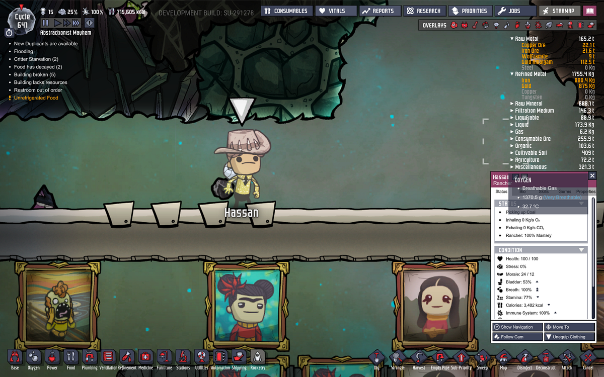
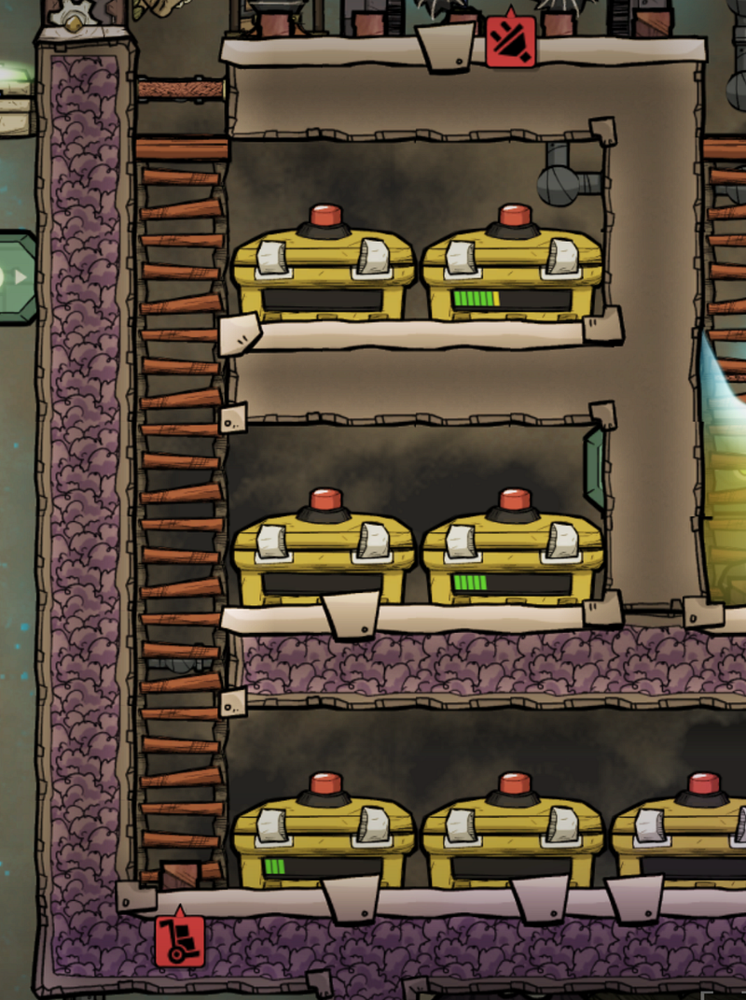
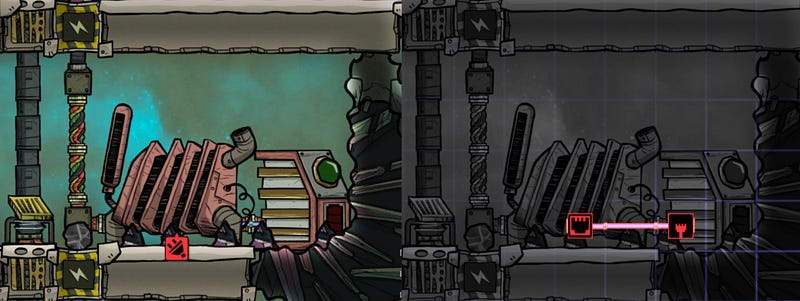
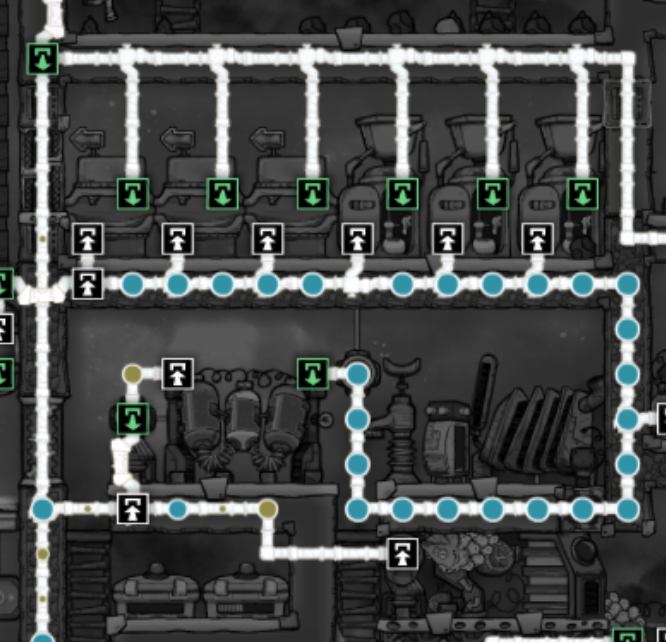
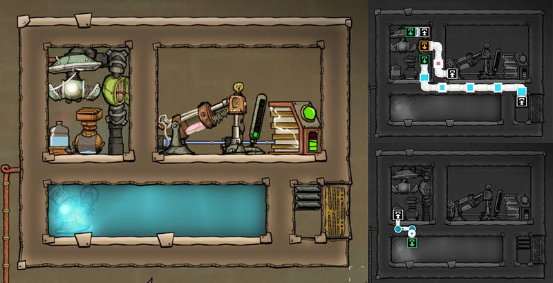

Oxygen Not Include 序盤の進め方
Oxygen Not Included 序盤の進め方

このフェーズでの全体方針
前回の超序盤のガイドと違い、ここからはプレイヤーがどのようなゲームプレイをするかによって大きく変わってくるところである。ここではあくまで自分のやり方を説明していくので、他にも正解はいくらでもあるだろう。
自分はこの段階ではなるたけ冒険せず、足場を固めていく。すなわち、ここでDuplicant達が生存していくのに必要な施設をアップグレードし、エネルギーさえあればある程度恒久的にシステムが回っていくように諸々を設置していく。
また、この段階では職業は全くつけないか、最低限のものしか取らないようにする。もちろん、どうしてもそれが必要だったり、先にDecorを増加させることができるのであれば前持って職業を進めていっても良いだろう。ただ、基本方針として、なるたけ無職か、なにかの職業につけたとしても昇進はさせない。
このフェーズでの目的
- 二酸化炭素部屋の設置
- 研究の推進
- 石炭発電機の設置
- 濾過装置による水循環システムの確立
- 電解機と水素発電による酸素供給システムの整備
二酸化炭素部屋の設置
普通二酸化炭素は避けるべきものだが、いくつかとても便利な使い方がある。ゲーム序盤でのそれは「食物の保存」だ。普通食物をそのあたりに放置しておくと、数サイクルで腐ってしまい、食物としては使えなくなる。
ところが、二酸化炭素に食べ物を入れておくと、腐らないのだ。
本来であれば、冷蔵庫を建設して、そこに保存しておくべきなのだが、なにせ冷蔵庫を運用するには恒常的なエネルギーの供給が必要なので、ゲーム序盤では若干重荷となる。
そこで二酸化炭素部屋です。
二酸化炭素は自動的に基地の底のほうに溜まるので、下のほう部屋を掘っておき、そこに二酸化炭素が溜まった段階で食料保管庫を作って、そこに食料を溜めればお手軽な食料庫になる。

研究の推進
前回のガイドにおいてとりあえず食料生産と酸素供給に目処がついて、食料の保存もできるようになったのなら、Duplicantの数を安全に5~6人まで増やせるはずだ。この状態であれば研究を進めていくのもある程度可能なはずだ。
まずは特に職業につける必要もなくすすめることが可能な研究を全てやっつけてしまおう。どれもこれもこの後必要になってくる。ギリギリまで待ってから、Advanced Researchが必要な研究に必要なApprentice Scientistの職業を誰かにつけると良い。
このフェーズ中に入手できるとといいな、という技術は以下の通り
- 石炭発電機
- 水素発電機
- 給水ポンプ
- 吸気ポンプ
- 岩石粉砕器
- 浄水器
- 自動化ワイヤー
- スマートバッテリー
- 手動エアロック
- 農耕タイル
- 無地のキャンバス
石炭発電機の設置
このあたりから基地内での電気の使用量が少しずつあがってくるので、なんらかの発電機を使わないと需要をまかなえなくなる。
石炭発電機を有限リソースである石炭を結構消費するし、二酸化炭素を生成するので正直それほど使いたい装置ではないのだが、この段階ではほぼ唯一のオプションであることと、比較的どこにでも設置できるのでまず使わざるを得ないだろう。
Duplicantが自分で走って発電する人力発電機以外の発電機はどれもこれも「特に指定しないと、燃料の有る限り発電し続ける」という性質を持つので注意だ。例えば、電池につなげてある石炭発電機は、たとえ電池が全て満杯になってても発電を続ける。ただの石炭浪費マシーンになりさがる。
これを回避するにはスマートバッテリーが必要だ。スマートバッテリーから自動化ワイヤーを引き、発電機につなげる、。スマートバッテリーからは、「充電が必要かどうか」という信号が出ている（充電が必要なら緑、不要なら赤）ので、それを発電機につなげると、充電が必要ないときにはその発電機は停止する。

最初はスマートバッテリーがなくてしょうがない場面もあるかもしれないが、スマートバッテリーがないならなるたけ人力発電でバッテリーをチャージする形にしたほうがよいだろう。
濾過装置による水循環システムの確立
近距離にある水たまりは比較的一瞬で枯渇してしまうだろう。これらを使って継続的に食料の栽培をするのは現実的ではないので、とりあえず序盤には少しでも水を追加したい。そのためにトイレの排水を利用する。
実はDuplicant達は水を飲まないのに何故か水洗トイレで大量の汚染水をトイレで排出する。実は水洗トイレを流すのには5kgの真水が必要なのだが、11.7kgの汚染水を作る。これを利用して真水を作るわけだ（残念ながらこの汚染水は雑菌にまみれている）。
基本的にはトイレ（流し台、水洗トイレ、おまけでシャワーも有り）からの排水を浄水器に通して、その結果の真水をトイレに戻すだけ。
ただし、ここでひとつ気をつけなければいけないのは、浄水器は出力側が真水で詰まっているとそれ以上汚染水の濾過を続けることができないということだ。濾過できないと、そのうちトイレ側の排水が詰まる。そこまでなったらトイレが使えなくなり、にっちもさっちも行かなくなる。
この詰まりが起こらないように配水管の長さを調節してちょうどよいバッファを作る事は可能なのだが、経験から言って、一度作った配管をあとから変更するのはよく有ることだ。なので、ここは素直に排水溝を作るべきだ。

個人的な好みとしては真水側に排水溝を作るのではなく、真水は詰まるにまかせ、その分処理できない汚染水を排水溝に溜めて置く。排水溝には給水ポンプを入れておき、また濾過可能なタイミングで浄水器に戻せるようにしておく。
残念ながらこれで得られる余剰の真水だけで長期間トイレと植物等への水分供給および酸素供給を行うのは難しいのだが、少なくともしばらくの時間は稼げる。
電解機と水素発電による酸素供給システムの整備
電解機はこのゲームの中で数少ない、その生産物をほぼ直接まるっと利用できる便利な機械だ。酸素はもちろんそのまま使えるし、もう一つの産物である水素は水素発電に使える。
最初に電解機を動かし始めるのには人力発電機や石炭発電機から外部の電力が必要なのだが、一旦安定して水素が得られるようになってからはこの限りではない。作られてくる水素をガンガン水素発電に回して、そこで得られた電力で電解機を回せばよい。この機構は本ゲーム内で多分最初に作成する複数コンポーネントを組み合わせたシステムなので、ここからがこのゲームの真の始まりと言ってもいいかもしれない。
以下に仕組みを説明するためだけの簡単な電解機＋水素発電の設計図を載せておく。左側の電解機で水素と酸素を作り、水素を発電機へ、残りを右下の排気口へと流す。水素発電機は自動化ワイヤでスマートバッテリーと接続するのを忘れずに。
基本はこの部品だけあればなんとか動く。

ただ、この仕組みには電解機の性能を使い切れていない、という問題がある。酸素供給が足りていれば別に問題はないのだが、ゲーム序盤では使えるスペースも限られているため、なるたけひとつの酸素供給システムで可能な限り広範囲の酸素をまかないたい。そのためには、電解機単位あたりの性能を限界まで引き出してやりたいところだ。
それについてはこの記事で説明すると、異常に長くなるので、別の記事に譲りたい。その記事では気圧や各種機械の効率、気体や液体のバッファ、外部電源との連携等について説明したい。
次のステップ
ここまでできれば、安定した食料と酸素の供給が行えているはずだ。インフラをキチンと用意しておいたおかげで、最初の安全なバイオームの外への探検へと出るのが大分楽になるはずだ。
このあとからは水源、間欠泉、原油、反エントロピー型熱無効化装置（AETN)等を探し、より安定したエネルギー等の供給を行えるようにしていくことになる。